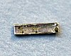

radium

Definition: Radium is a chemical element with the symbol Ra and atomic number 88. It is the sixth element in group 2 of the periodic table, also known as the alkaline earth metals. Pure radium is silvery-white, but it readily reacts with nitrogen (rather than oxygen) upon exposure to air, forming a black surface layer of radium nitride (Ra3N2). All isotopes of radium are radioactive, the most stable isotope being radium-226 with a half-life of 1,600 years. When radium decays, it emits ionizing radiation as a by-product, which can excite fluorescent chemicals and cause radioluminescence.
Source: Wikipedia
Wikipedia Page
Wikidata Page